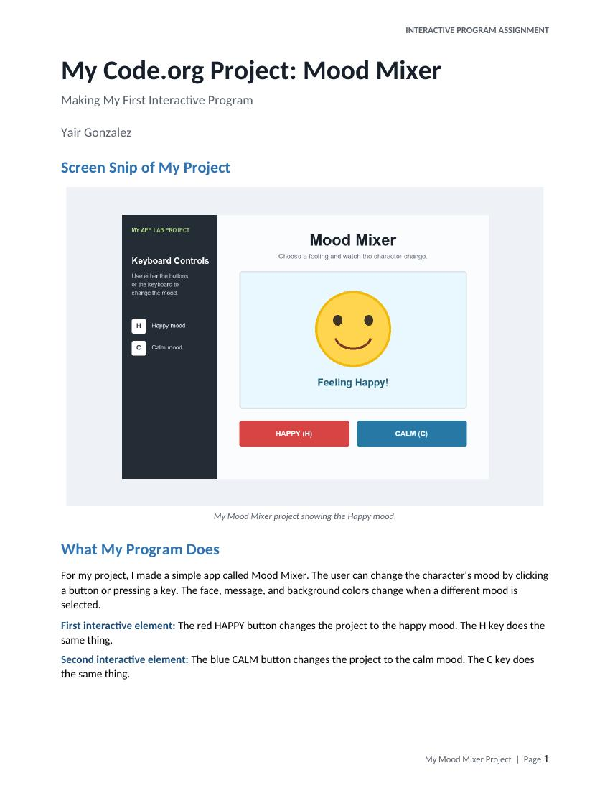

I think the most important thing I have learned in this module was the fact that user input can be used by an interactive program to cause something to occur on the monitor. In my Code.org project, I added interactive components which demonstrated to me that code is not simply a list of commands; it allows a computer program to react to things such as pressing keys or making decisions. I believe this applies to our everyday lives as well. Many applications, games, websites, and other types of software depend upon a user's interaction with the software to function properly.